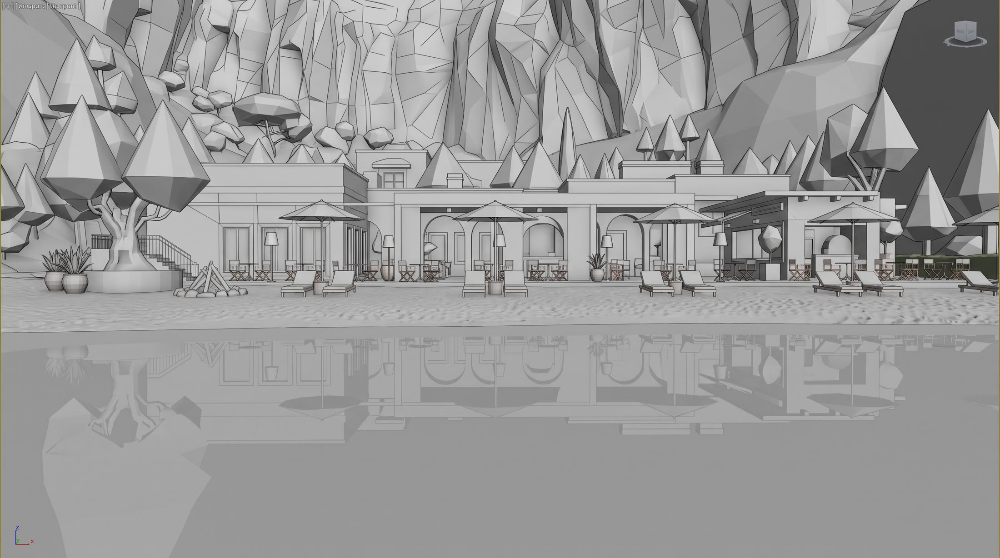
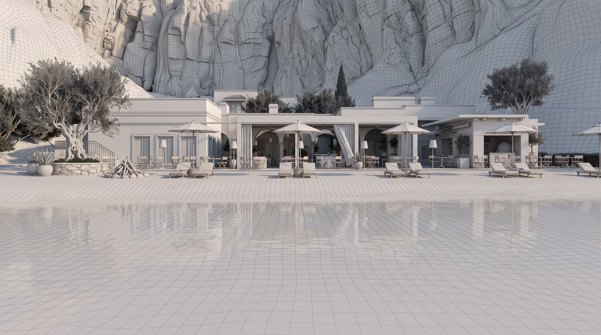
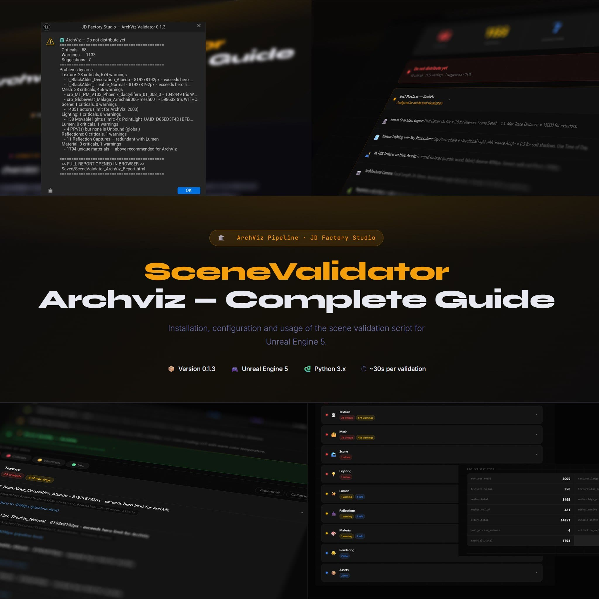

Juscélio Diaz — Technical Artist | AI Creative
Juscélio Diaz — Real-time architectural visualisation
-
Project film 
Beachfront elevation 01.1Casa Müze — project filmResidential development · Real-time · Immersive installation — Winner, CGarchitect 3D Awards 2026 -
Real-time 01.2Beachfront elevationCasa Müze · Real-time · Immersive installation -

Real-time 01.3Lagoon between the terracesCasa Müze · Real-time · Immersive installation -

Final 
Pass 1 
Pass 2 02.1Terrace and infinity poolCoastal Villa, Italy · Stills · Interactive presentation -

Final 
Pass 1 
Pass 2 02.2DayCoastal Villa, Italy · Stills · Interactive presentation -

Final 
Pass 1 
Pass 2 02.4Blue hourCoastal Villa, Italy · Stills · Interactive presentation -
Stills 02.5Vaulted living roomCoastal Villa, Italy · Stills · Interactive presentation -

Stills 02.6Pergola diningCoastal Villa, Italy · Stills · Interactive presentation -

Final 
Pass 1 
Pass 2 02.7Arcade to the terraceCoastal Villa, Italy · Stills · Interactive presentation -

Stills 02.8Garden loungeCoastal Villa, Italy · Stills · Interactive presentation -

Final 
Clay 
Wireframe 03.1Breakwater aerialWaterfront Towers · Unreal Engine · Masterplan & amenity -

Unreal Engine 03.2Podium pool terraceWaterfront Towers · Unreal Engine · Masterplan & amenity -

Unreal Engine 04.1Pergola and lap poolTropical Residence · Unreal Engine · Exterior & interior -

Unreal Engine 04.2Living, dayTropical Residence · Unreal Engine · Exterior & interior -

Unreal Engine 04.3Living, nightTropical Residence · Unreal Engine · Exterior & interior -

Unreal Engine 04.4Aerial to the beachTropical Residence · Unreal Engine · Exterior & interior -

Unreal Engine 04.5KitchenTropical Residence · Unreal Engine · Exterior & interior -

Stills 05.1Dining, dayTimber House · Stills · Interiors, day to dusk -

Stills 05.2Dining, blue hourTimber House · Stills · Interiors, day to dusk -

Stills 05.3Kitchen to the gardenTimber House · Stills · Interiors, day to dusk -

Stills 05.4Galley kitchenTimber House · Stills · Interiors, day to dusk -

Stills 06.1Dining to the garden poolInterior Studies · Stills · Residential, hospitality & workplace -

Stills 06.2Stair and atrium gardenInterior Studies · Stills · Residential, hospitality & workplace -

Stills 06.3Living to the courtyardInterior Studies · Stills · Residential, hospitality & workplace -
Stills 06.4Pool terraceInterior Studies · Stills · Residential, hospitality & workplace -

Stills 06.5Restaurant, dayInterior Studies · Stills · Residential, hospitality & workplace -

Stills 06.6Restaurant, nightInterior Studies · Stills · Residential, hospitality & workplace -

Stills 06.7Dining along the façadeInterior Studies · Stills · Residential, hospitality & workplace -

Stills 06.8Loft loungeInterior Studies · Stills · Residential, hospitality & workplace -

Stills 06.9Roof terraceInterior Studies · Stills · Residential, hospitality & workplace -

Stills 06.10Workplace, mezzanineInterior Studies · Stills · Residential, hospitality & workplace -

Stills 06.11Studio floorInterior Studies · Stills · Residential, hospitality & workplace -

Stills 06.12Reception at duskInterior Studies · Stills · Residential, hospitality & workplace -

Final 
Pass 1 
Pass 2 07.1Concrete canopyAutomotive · Stills · Lighting & look development -

Final 
Pass 1 
Pass 2 07.2Coastal roadAutomotive · Stills · Lighting & look development -

Final 
Pass 1 
Pass 2 
Pass 3 07.3Paris streetAutomotive · Stills · Lighting & look development -

Final 
Pass 1 
Pass 2 07.4Timber facadeAutomotive · Stills · Lighting & look development -

Final 
Pass 1 
Pass 2 07.5SnowfieldAutomotive · Stills · Lighting & look development -

Final 
Pass 1 
Pass 2 07.6Night gridAutomotive · Stills · Lighting & look development -

Final 
Pass 1 
Pass 2 07.7CockpitAutomotive · Stills · Lighting & look development -

Final 
Pass 1 07.8CircuitAutomotive · Stills · Lighting & look development -

Final 
Pass 1 
Pass 2 07.9Concept, residenceAutomotive · Stills · Lighting & look development -

Final 
Pass 1 
Pass 2 07.10City streetAutomotive · Stills · Lighting & look development -

Final 
Pass 1 
Pass 2 07.11Urban facadeAutomotive · Stills · Lighting & look development -

Final 
Pass 1 
Pass 2 07.12FrostAutomotive · Stills · Lighting & look development -

Stills 07.13Beach pathAutomotive · Stills · Lighting & look development -

Stills 07.14Wheel detailAutomotive · Stills · Lighting & look development -
Showreel ReelShowreel 2026Real-time cinematics, archviz and virtual production, rendered in Unreal Engine -
Video R.01Real-time reelUnreal Engine -

-

-

Original 
AI-edited 
Design sheet 
Design sheet C.01Couple with dog on the beachNano Banana 2 · Prompt-Enhancement -

Original 
AI-edited 
Design sheet 
Design sheet C.02Character C with pizza in the carNano Banana 2 · Prompt-Enhancement -

Design sheet Video 
Video frame · before/after C.03Character swap in the parkVideo model · character-swap LoRA · ComfyUI -

Reference · Wiethe 
AI-generated 
Design sheet C.04Character D in the studioNano Banana 2 · design sheet as reference -

AI-generated 
AI-generated 
Design sheet C.05Character B on the coastNano Banana 2 · design sheet as reference -
Design sheet Video 
Video frame · before/after C.07Character swap in the carVideo model · character-swap LoRA · ComfyUI -

Design sheet Video 
AI-generated C.27Character swap on the runwayVideo model · character-swap LoRA · ComfyUI -

Source video · frame 
AI-generated 
Design sheet C.08Character C · yellow jacketNano Banana 2 · design sheet as reference -
AI-generated Design sheet C.11Character E · softshell jacket in the mountainsNano Banana 2 · design sheet as reference -

AI-generated C.12Character E · sneaker shootNano Banana 2 -

AI-generated 
Design sheet C.13Character E · autumn campaign with product detailNano Banana 2 · design sheet as reference -

AI-generated 
Design sheet C.14Character E · studio portraitNano Banana 2 · design sheet as reference -
AI-generated C.18Character B · jersey on the coastNano Banana 2 · design sheet as reference -

Reference · Wiethe 
AI-generated 
Design sheet C.25Character D at the carouselNano Banana 2 · design sheet as reference -

Reference 
AI-generated C.26Character E · outfit from a referenceReference photo as template - PlaceholderNext film coming
Tools & assets
Python · Unreal Engine
Scene Validator for Archviz
Python tool for Unreal Engine archviz pipelines: validates scenes, catches common errors and enforces production-ready standards before rendering.
Get it on Gumroad ↗Unreal Engine 5 · Real-time environment
Beach House — Unreal Engine 5
Complete UE5 environment: beach house scene with high-fidelity lighting, precise materials and a cinematic-ready setup.
Get it on Gumroad ↗Need a tool or a real-time scene for your pipeline?
Get in touch →Goal
A React app so the whole team can use the workflow.
Pipeline · Character Swap
Character in, video out – without opening ComfyUI.
Upload a character and a video, fill in four fields, click Generate – no ComfyUI knowledge needed. I keep graph, models and parameters stable in one place, so the whole team gets the same quality.


nodes behind the scenes – nobody on the team touches them
fields instead of a prompt: who, what stays, footwear, extra
click to the video, live progress in the browser
MP4 with the original sound of the source video
Architecture
01 · Team
React app (built by me)
Two uploads, four plain-language fields, queue and sampler steps live, result synced next to the original.
02 · Gateway
FastAPI
Validates files, trims the video, turns the fields into the technical prompt, one job per GPU, logs seed and output.
03 · GPU
ComfyUI · video model
Runs only the approved workflow. Internal network only, never publicly reachable – the graph stays locked.
Inside the workflow
- Design sheet + video
- Qwen3-VL
- Video model + LoRA
- Video- & Audio-VAE
- MP4
Monitoring
My own Python tool delivers the data.
perfmon · Python Sample data
I built a Python tool that measures every run.
It runs the workflow through the ComfyUI API, measures time per node, VRAM and GPU utilisation, and builds a report automatically.
68 % of the time in the sampler – that is where optimising pays off.
View report ↗Principles
Six decisions that keep it stable.
01
Prompt from fields
The team describes, the system writes – with the rules that work.
02
Graph locked
Only prompt, image, video, duration and seed can change. Never sampler, models or LoRA.
03
Design sheet
Seven views as the only image reference – the character holds even when the head turns.
04
Original sound
Audio comes from the source video. Lips and timing stay believable.
05
Fixed seed
Compare variants fairly; “again with a new seed” is one click.
06
Safe
ComfyUI never exposed, file and length limits, metadata stripped.
Prompt, parameters and workflow file – I show them live in a conversation.
Get in touch →Practice
Architecture, before it exists.
Practice · Real-time archviz
Light, material and camera – delivered at frame rate.
I make architectural images and real-time experiences for residential developments, studios and brands – light, material and camera treated with the discipline of offline rendering, delivered in Unreal Engine at frame rate.

years between art and engineering
countries delivered to – Brazil, Germany, UK, US, Canada
projects in this portfolio, from stills to installation
Winner – Best Immersive Experience, CGarchitect 3D Awards
Disciplines
01 · Stills
Stills
Exteriors, interiors and automotive look development – one camera held from day into blue hour.
02 · Film
Film
Project films and real-time cinematics, from archviz to LED-wall virtual production.
03 · Real-time
Real-time & interactive
Interactive apps, configurators, Pixel Streaming and immersive installations like Casa Müze.
Software
- 3ds Max
- Corona
- Unreal Engine 5
- Python
- Pixel Streaming
Experience
Ten years between art and engineering.
Studios · 2021–26 Selected
Projects for studios and brands across Brazil, Germany, the UK, the US and Canada.
Real-time scenes for residential developments, LED-wall virtual production pipelines, automotive look development for Hyundai and Genesis, and Web3 experiences for Macy’s, Clinique and NARS while based in Berlin.
6 studios since 2021 – NVision, Chroma Garden, Digital Giant, OjinXhaus, UNHIDE, Lightfarm.
View CV →Capabilities
Six things studios bring me in for.
01
Real-time archviz
Interactive apps, configurators and Pixel Streaming.
02
Lighting & look dev
Lighting, materials and look development held to offline quality.
03
Virtual production
Environments for LED-wall virtual production pipelines.
04
Procedural environments
Vegetation and landscape built procedurally, at scale.
05
Profiling
GPU/CPU profiling and optimisation, so the finished image runs in real time.
06
Pipeline tools
Python tools for Unreal Engine – like the Scene Validator for Archviz.
Open to studio roles – remote, Europe & worldwide.
Get in touch →